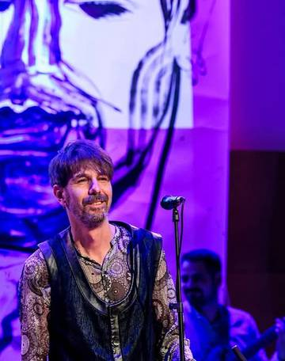
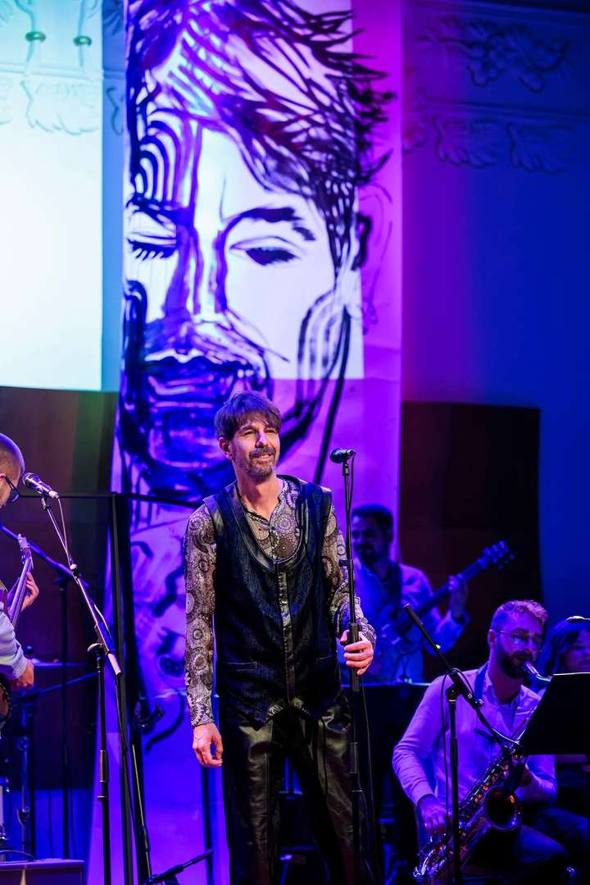

Nikola Čelan
TBF 1990–94 · Puntari 2000 · Iskon do 2006 · Libar
Novinar, književnik i glazbenik iz Splita. Rana postava TBF-a; izvorna postava klape Iskon (do 2006.); osnivač projekta Libar. Autor knjiga Silazak nad grad i Baština, predstave Baš beton te izdanja s Librom i Antunom Devčićem.

Kratki životopis
Od početka 1990-ih djeluje na splitskoj glazbenoj sceni, najprije u školskoj, predizdavačkoj postavi TBF-a, zatim u sastavu Rectum, klapi Puntari (2000.), klapi Iskon (2000.–2006.) i projektu Libar. Pisao je za dnevnike, tjednike i radiopostaje; uređivao fanzin Reful i kazališni mjesečnik Start. Godine 1999. na Splitskom ljetu premijerno je izveden njegov igrokaz Baš beton. S Puntarima je 2000. osvojio Srebrni štit na FDK Omiš. U izvornoj postavi Iskona pjeva bas: Ti si more, Nevera, album Ljubavne (2005.); iz klape izlazi 2006., prije njezine diskografske, novokomponirane faze. Godine 2005. objavio je Silazak nad grad, 2017. Baštinu.
Faze
TBF — rana postava (oko 1990.–1994.)
Školska postava s Mladenom Badovincem i Lukom Barbićem. Prvi javni nastup: 19. prosinca 1992., predgrupa Dinu Dvorniku u Kakaduu. Čelan izlazi oko 1994. Suradnja poslije: Baš beton 1999.; gostovanja 2017. i 2019. Nije diskografska postava od Ping-ponga (1997.).
Rectum (od 1994.)
Crossover / gitarski sastav. Snimke postoje; nisu u Discogs.
Klapa Puntari (2000.)
Srebrni štit, FDK Omiš 2000. Članstvo se svodi na tu festivalsku godinu.
Klapa Iskon (2000.–2006.)
Bas u izvornoj postavi. Ti si more, Nevera, album Ljubavne (2005.). Izlazak 2006. Kasnije emitiranje nije povratak u klapu.
Libar (2007.–)
- Klapa Libar — Prvi (2008.); Indexi 2009.
- Grupa Libar — Dite; album Libar (2012.).
- Dvojac — Čelan i Antun Devčić; EP Nova Zemlja (2025.).
Samostalno
Tvoj zakon, Goli ispred Boga, Spaljene rane (2021., Greenwood Studio).

Diskografija
| Razdoblje | Projekt | Uloga | Izdanje |
|---|---|---|---|
| 1990.–94. | TBF, rana postava | osnivanje, vokal | demo, radio, Kakadu 1992. |
| 2000. | Klapa Puntari | vokal | Srebrni štit, FDK Omiš |
| 2000.–2006. | Klapa Iskon | bas, izvorna postava | Ljubavne, Ti si more, Nevera |
| 2007.–2017. | Libar | osnivač, vokal | Prvi, Libar, Dite |
| 2021.–2025. | Solo / dvojac | autor, vokal | Spaljene rane, Kliješta, Nova Zemlja |
Iskon: Baren se iskaji nevirna, Bila golubice, Cesarica (live), Izišla je zelena naranča, Izresla ruža rumena, Lipa li si mare moja, Ne budi me mati (live), Niti san ja seljanka, Ostavljam te samu, Proplakat će me zora, Serenada Marići, Slatko spavaj, Zem'ja; s Lukyjem Ti si more, Nevera, Ča život bija bi bez nje, Škojarska pisma; TBF & Iskon — Splitsko stanje uma; Gibonni / Dedić / Black Coffee / Iskon — Sve ću preživit (live).
Gibonni: Hodaj, Mi svijetlimo, Sebi dovoljna, Zavezanih očiju, Vesla od zlata.
Klapa Libar: Ajde ća, Bi' mogo da mogu, Đelozija, Fragile, Hallelujah, Here Comes the Rain Again, Man on the Moon, Men' se dušo od tebe ne rastaje, Moja voda, Posljednji ples, Pusti da ti leut svira, Seagull, Voli me još ovu noć, Wonderful Tonight.
Libar: Dite, Čuvaj me, Glasnije, Kapi, Kliješta, Kukalo, Lađe, Mantra, Mir morskog dna, Na putu prema njoj, Ne mogu reći ti zbogom, Odrasli, Oprosti mi, Poljubac pod pomrčinom mjeseca, Tempus fugit, Vrh, Vrime radi svoje, Zakon soli; Gaeta; Tuđe oči.
Solo: Goli ispred Boga, Spaljene rane, Tvoj zakon.
Scena
Utjecaj TBF-a nije jedna rečenica o pionirima. Često se sljepljuje s članstvom u diskografskoj postavi, a riječ je o slojevima koji se ne poklapaju: kanal prije kataloga, jezik koji postaje metoda, institucija koja jede žanr, i prijenosi u kazalište i knjigu. Libar nije nastavak tog utjecaja kao utjeha. To je drugi rat na istom terenu — Split kao subjekt, ovaj put višeglasjem izvan folklora i popom izvan estrade.
Kanal prije kataloga
Prije albuma Split hip-hop sluša s kazeta pomoraca i s MTV-a, a nema vlastitoga zapisa. Rana postava — Čelan, Mladen Badovinac, Luka Barbić, s prijateljima — radi kućnu produkciju, lokalni radio i prvi javni nastup. Nastup 19. prosinca 1992. pred Dinom Dvornikom na promociji Prirode i društva u Kakaduu ulazak je ulice na institucionalnu pozornicu prije nego što je postojao katalog.
Ping-pong (Umjetnost zdravog đira) (1997.) u više izvora stoji kao prvi cjeloviti hrvatski hip-hop album, ili kao prvi koji Split pretvara iz slušatelja u izdavača. Zagreb istih godina ima Tram 11; razlika nije tko je „prvi“, nego ton. Zagreb ide u politički registar; Split u kroniku grada, flegmu i crni humor. TBF otvara južnjački idiom: manje agresije, više melodije, liniju Miljenka Smoje i Tome Bebića uz formativno slušanje Public Enemyja. Žanrovski je utjecaj konkretan: sastav izmišlja ime ping-pong da preduhitri prigovor da to nije hip-hop. Mješavina rapa, živoga sastava, reggaeja, trip-hopa i sampla kasnije se normalizira. Tko u Hrvatskoj radi „rap s bendom“, radi u prostoru koji je otvorio taj album, a ne manifest.
Utjecaj teksta veći je od utjecaja ritma. Saša Antić ulazi 1993./94.; njegovi stihovi postaju mjerilo. Nasljeđuju se tri stvari kao metoda, ne kao citat: grad kao lik (ST stanje uma nije pjesma o Splitu — Split je subjekt), satira bez distance od ulice, odbitak turbofolka kao kulturni stav a ne kao ukus. Tekstopisac diskografske faze je Antić. Rana postava gradi kanal — radio, demo, Kakadu — kroz koji taj jezik kasnije izlazi. Utjecaj jezika nije Čelanov soloautoritet; utjecaj osnivanja kanala jest.
Od Maxona i Galerije Tutnplok TBF prestaje biti samo scena i postaje gradska institucija: Porini, veće dvorane, regionalna turneja. Drugi naraštaj splitskoga rapa, primjerice Dječaci nakon 2008., ne zvuči kao TBF. Utjecaj nije stilski klon, nego činjenica da Split više nije provincija hip-hopa. Paradoks ostaje: što je TBF institucionalniji, to je manje „hip-hop“ u uskom smislu. Referentna je točka i kad ga nova scena više ne oponaša.
Palača, knjiga, granica
Čelanove točke nisu životopis u tri slike. To je filtar: što se smije pripisati njemu, a što ostaje TBF-u kao instituciji. Nijedna točka nije album Ping-pong.
| Godina | Medij | Što se prenosi | Što se ne prenosi |
|---|---|---|---|
| 1990.–94. | demo, radio, Kakadu | postojanje sastava, prva pozornica | studijski katalog |
| 1999. | Baš beton (Ivica Buljan, Splitsko ljeto) | TBF-ova metoda u kazalište: pjesma, satira grada, naturščici | članstvo u postavi |
| 2017. | Baština | historiografija rane scene | službena biografija benda |
Baš beton dolazi poslije izlaska iz postave i poslije Ping-ponga. Buljan uzima TBF kao Let 3 uz Fedru: ne kao cameo, nego kao zvučni i idejni motor predstave o betonu, prahu i palači. Zato je to utjecaj, ne popis postave. Povremeni nastupi 2017. i 2019. pripadaju istom nizu, u slabijem obliku — tijelo na pozornici, bez novoga zapisa.
Baština pretvara usmenu scenu u izvor koji se može citirati. Bez nje rana faza ostaje fusnota („bivši član“). S njom postoji autorizirani zapis koji bend nije sam napisao. Granica mora ostati tvrda: memoar, ne službena biografija. TBF nije izmislio hrvatski rap; Rijeka i Zagreb imaju vlastitu liniju. Nije zaustavio turbofolk. Nije odredio zvuk rapa nakon 2008. Najveći utjecaj nije „svi zvuče kao TBF“, nego da se Split sluša kao subjekt, da splitski urbani govor smije na nosač zvuka bez folklornoga alibija i da se društvena kritika smije smijati.
Zasićenja
Početkom 2000-ih ta su se tri zasićenja poklopila. TBF je već institucija. Čelan se 2002. vraća iz Zagreba u grad koji je, po Baštini, dobio gore nego što je naraštaj očekivao — ne zbog nedostatka hitova, nego zbog programa: fešta, turbofolk, isti specijalisti. Klapa prestaje biti lokalni obred i postaje nosač zvuka i brand — Omiš, Večeri dalmatinske šansone, kasnije Dora. Iskon ide tim putem. Čelan izlazi 2006., prije diskografske, novokomponirane faze. Ime klape ostaje na tržištu; njegov udio ostaje na starim snimkama.
Puntari 2000. tu stoje kao dokaz, ne kao prethodnica: jedne festivalske godine dosta. Libar 2007. uzima vokal, ne kalendar Festivala dalmatinskih klapa. Nije nastavak Iskona. To je izlazak iz klape kao institucije, s ljudima koji još znaju pjevati klapski, ali neće igrati Omiš kao karijeru.
Drugi rat
Libar nije jedan sastav s jednom postavom. Ime je projekt koji mijenja medij; kontinuitet drže naslov i Čelan, ne popis iz 2017. Metoda kroz sve faze: dalmatinski vokal kao nosiva dionica u tuđem žanru. Riječ libar (knjiga) nije ukras — katalog se prepisuje, ne čuva kao folklor.
Prva cjelina još je akustična. Osnivanje 2007.: vokali iz klapa (Iskon, Šufit, Cambi, Tragos, Grdelin…) i instrumentali sa scene. Prvi nastup na Riječkim ljetnim noćima 2008. Album Libar Prvi (Menart, 2008.) — dvanaest obrada. Nagrada Prvi Indexi u Sarajevu 2009., najbolji regionalni etnoalbum, kaže „etno“; namjera je bila ukinuti kanon, ne ga prodati. Poslije prvoga albuma skida se atribut „klapa“. Tko 2012. još kaže „klapa Libar“, sluša etiketu, ne sastav.
Druga cjelina pada u uski prozor, 2008.–2012., kad Split još sluša veliki vokalni rock kao novost, ne kao nostalgiju. Pet ravnopravnih vokala uz sastav. Prva autorska pjesma Dite (Sina Jakelić; aranžman Jakelić, Čelan, Jan Ivelić, Vojan Koceić) pogađa Večeri dalmatinske šansone 2010. jer nije ni klapa ni šansona u uskom smislu: more kao subjekt, dijete kao stanje. Tri Šansonijera — debitant, tekst, publika. Album Libar (Menart, 2012.) pokušava isto na deset autorskih pjesama. Nominacija Impala za europski indie. To nije TBF-ova metoda. TBF je grad, satira i sample. Libar je emocija, harmonija i festival. Zajedničko je samo odbijanje da Split smije zvučati samo na jedan način.
Koncert u O'Hari 22. listopada 2011. — 530 ulaznica — vrhunac klupske faze, na istoj adresi gdje je 1993. bio prvi cjelovečernji TBF. Riva 2015. izlazak je iz kluba na gradsku binu. Cijena: repertoar mora držati djecu, roditelje i Depeche Mode. Čelanova rečenica toga jutra — „Split može i voli drugačije“ — politička je, ne marketinška: program grada, ne popis pjesama. Velika postava skuplja je od hitova koje nosi. Čuvaj me (Aquarius, 2015.), Na putu prema njoj (2016.), Zakon soli na Večerima dalmatinske šansone 2017. — i lom. Dio članova odlazi u Salto Guru. Nisu se „raspali“; nestalo je razloga da budu isti organizam. Ime ostaje kod osnivača jer je ime bilo projekt, ne zadruga.
U istoj godini izlazi Baština. Jedan medij zatvara usmenu TBF-scenu; drugi zatvara Librovo kolektivno poglavlje. Enciklopedija i dalje drži popis Rivier, Jakelić, Colnago, Alajbeg, Radić, Ivanišević, Koceić, Čelan kao sadašnjost. Taj popis vrijedi za 2017., ne za 2026. Wikipedia točno bilježi osnivanje, Prvi, Libar, Dite i Indexi; zamrzava članove i žanr; preskače raspad, Salto Guru, vlasništvo imena, Devčića i Novu Zemlju. Isti mehanizam kao kod Iskona: katalog i članstvo se lijepe, osnivač se gubi u kolektivu srednje faze.
Što ostaje
Kliješta (Greenwood, 2022.) već potpisuju Čelan i Antun Devčić. EP Nova Zemlja (Aquarius, 11. travnja 2025.) — Nova Zemlja, Kliješta, Nokturno, Krojeni za kraj s Nedom Pejković — nije povratak klapi. Opera je vokal kao specijalni učinak, isti materijal u trećem mediju. Referenca faze: Enigma, Floydi, Soft Cell, OMD, Hurts, Pet Shop Boys... „Osam godina pauze“ u najavama označava kraj velike postave, ne prekid rada. Salto Guru je ostatak benda bez imena; Libar je ime bez ostatka benda.
Hrvatski dom, 24. travnja 2025., institucionalni je prostor, ne O'Hara. Film umjesto 530 ulaznica u viskiju. Split 2020-ih nema kluba koji radi ono što je O'Hara radila 2011.; projekt se seli u dvoranu i na stream jer ulica više nije infrastruktura.
TBF je dao pravo Splitu da bude subjekt. Libar testira smije li isti grad slušati višeglasje izvan folklora i pop izvan estrade. Prvi test je uspio 2010. Drugi je još otvoren.
YouTube
- Kanal Nikola Čelan
- Tvoj zakon
- Goli ispred Boga
- Spaljene rane
- Dite
- Glasnije
- Kanal Libar · Libar na Facebooku
Novinarstvo, knjige, kazalište
Slobodna Dalmacija (kolumna Stari splitski spazam); Dalmatinski portal; Večernji list, Vjesnik, Glas Slavonije; Heroina Nova, Nedjeljna Dalmacija, Rolling Stone Hrvatska; Radio Split; Reful / Start; Klubska scena.
Silazak nad grad (HKD Napredak, 2005.). Baština (Sjeverni pol, 2017., ISBN 978-953-59745-0-5). Baš beton, redatelj Ivica Buljan; pretpremijera 3. 7. 1999. Zadar; premijera 17. 7. 1999. Splitsko ljeto.
Izvori
- DP 2014.
- DP 2016. — O'Hara
- DP 2018. — Baština
- SD 2017. — Paradox
- Wikipedia — Libar (stanje 2017.)
- Morski 2023. — Alajbeg / Salto Guru
- DP 2025. — Nova Zemlja
- facebook.com/libar.st
Kontakt
Split. Kanal: YouTube · Libar: facebook.com/libar.st